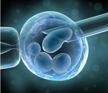
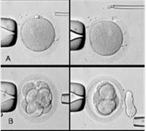
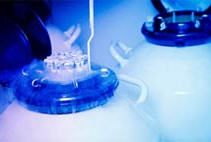
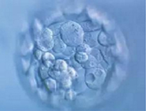
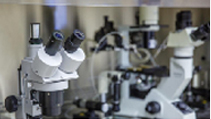
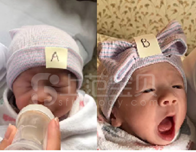
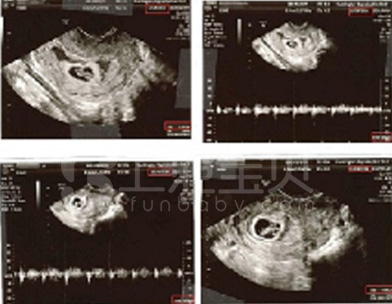
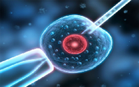
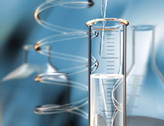
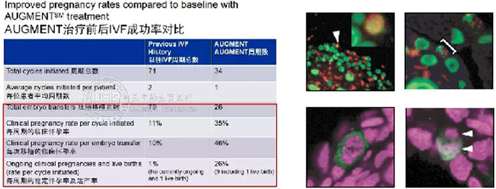

第三代试管婴儿自1990年诞生以来，从最初的只能筛查5-7对染色体发展成至今不仅可以对胚胎所有染色体（共23对）进行筛查 ，还可以深入到单基因进行了解。第三代试管婴儿归根结底是不仅仅选择外表看似正常的胚胎，更要在体外对胚胎进行染色体检查，选择染色体正常的胚胎植入子宫，理论上可以提高“试管婴儿”的成功率，这就是胚胎植入前遗传学筛查。
当前位置：主页 > 试管婴儿
Ⅰ第三代试管婴儿简介
1. 发展历史：
最初的第三代试管婴儿一般采用荧光原位杂交技术（FISH）的方法，能够同时检测不超过8对染色体，但是人类染色体有23对，其中5~7对染色体正常，仍然有可能存在其他染色体的异常，而没有被发现，所以才有了之后技术的发展。但泰国目前的第三代试管婴儿仍然只检测3对染色体。
2. 第三代试管婴儿作用：
35岁卵子畸变率已经超过45%，之后逐年升高。其实，身为女性自身也能有所感受：不采取避孕措施，夫妇双方各项生理检查均正常，为什么试孕1年都怀不上，问题可能就出在卵子上。
如果盲目移植不健康的胚胎会有怎样不好的结局？一、移植后不着床；二、孕期流产；三、具有出生缺陷或者遗传疾病。但是由于可以筛选性别所以国内目前严格限制技术应用。
而第三代试管婴儿由于在移植前即进行检查，则可淘汰不健康的胚胎，在很大程度上规避了流产的风险，同时可以明确知道胎儿性别。
- 
- 
- 
3.第三代试管婴儿技术：
第三代试管婴儿的革命性技术——移植前基因筛查，包括PGD、PGS、NGS等多种。在胚胎移植前即进行检查，则可淘汰不健康的胚胎，在很大程度上规避了流产的风险。
4.PGS、PGD、NGS对比：
PGS是进阶版的染色体检查，针对第5或第6天的囊胚进行全部23对染色体的检查。PGS (Preimplantation Genetic Screening):胚胎植入前遗传学筛查，通过检测胚胎的23对染色体结构、数目，通过对比来分析胚胎是否有遗传物质异常; 这大大增加了检测出异常染色体的概率从而提高成功妊娠率。
PGD (Preimplantation Genetic Diagnosis):即胚胎植入前基因诊断，是第三代“试管婴儿“的核心技术，主要用于检查胚胎是否携带有遗传缺陷的基因; 尤其适合红绿色盲、白化病等患者进行优生优育。
NGS(Next Generation Sequencing)新一代基因测序技术，以在短时间内对基因进行精确定位，可检测胚胎全基因组的染色体疾病和94种单基因疾病(常染色体隐性遗传病、常染色体显性遗传病X连锁疾病、遗传性肿瘤等)，并可同时检测非整倍体、拷贝数异常和单亲二倍体引起的疾病。
5.各国第三代试管技术对比：
中国目前可以做第三代试管婴儿的医院一共有16家，患者可以自行选择就近约诊，但是有以下两个问题需要注意：
a) 中国目前有几千万不孕不育夫妻，医院资源供不应求，存在难挂号、难买药、难进周的情况；
b) 中国只能不孕不育夫妇双方明确有染色体疾病或携带者才能进行第三代试管婴儿，其他诸如大龄夫妇均不可享受。
美国及泰国目前开展的第三代试管婴儿，进行第三天胚胎的FISH检查，会筛查13,18,21和XY染色体是否存在异常，其他除非是有遗传疾病才会去筛查23对染色体。
欧洲目前普遍采用囊胚移植技术，将胚胎培养至第5天，取出1-3个细胞后冷冻，并将取出的细胞送至专门的PGS/PGD实验室检查，由此可以排除染色体或者单基因异常造成的上百种疾病。在操作第三代试管婴儿的过程中，胚胎学家即可了解到胎儿性别，让准父母有选择性地移植。
6.第三代试管婴儿适用人群：
a) 多次流产史
b) 曾生育有染色体问题的孩子或者流产的胚胎进行检查发现有染色体问题
c) 女性卵巢功能差，或超过35岁
d) 男性精子质量差，例如精子碎片率高
e) 准父母任一方已检出有染色体问题
- 
- 
Ⅱ服务内容
上范第三代试管婴儿服务项目包括：HIV精子洗涤、HIV捐卵代孕、代孕、捐精代孕、捐精捐卵代孕、捐精自怀、捐卵代孕、捐卵自怀、卵子冷冻、试管婴儿手术。
Ⅲ上范第三代试管婴儿服务优势
1.赴欧合法化
持有中国不孕不育医疗咨询营业执照
欧洲医疗机构正式授权，在国内即可完成前期咨询
欧洲律师审定合同并由驻华大使馆公证，确保合法有效
监管账户并定期发送账单，消费清晰透明
2.上范费用透明化
合作医院的海外市场部，专属服务人员
医疗资源优化整合，一站式全流程服务
以公司形式与上范机构合作，争取更多折扣
风险控制及规避，避免非必要花销，节省费用
3.全球试管最成功率最高
试管婴儿单周期成功率可达80%
合作医院各有千秋，擅长不同领域
针对患者生育水平提供个性化诊疗方案
治疗取消率低，反应的患者范围广泛
4.让您享受国际化服务
医疗顾问，提供试管婴儿及辅助生育专业咨询
私人管家，协助开设信托账户，监管并核算账单
专人协调，全程协助辅助生育
5.欧洲顶级医院供您选择
NCRC、ICRC、RHCA等多家试管婴儿医院
超过8家欧洲细胞捐赠合作机构
超过8家欧洲辅助生育合作机构
超过6家支持机构，包括美国律师事务所、信托基金等
Ⅳ第三代试管婴儿服务流程：您与宝宝，或者只差一张机票的距离
Ⅴ第三代试管婴儿权威医院 >>
Ⅵ第三代试管婴儿案例：缘分到了，谁也挡不住……
-

C 先生的第三代试管婴儿双胞胎出生啦
为了去接宝贝儿子，C先生已提前十几天去了欧洲，今天终于等到了第三代试管婴儿宝宝的诞生，并在第一时间给上范传回
-

Z先生欧洲试管婴儿代妈身体检查良好
Z先生欧洲试管婴儿代妈身体检查良好，宝贝们一天天的在健康成长!这对见过不少大风大浪的Z先生来说，也算是一段难得的人
-
欧洲试管婴儿客户动态两则
虽然很多选择欧洲第三代试管婴儿的准父母同时会选择欧洲合法辅助生育，但是我们会时时通报万里之外宝宝们的最新动态哟
Ⅶ第三代试管婴儿常见问题解答：没有任何顾虑，方能轻松成行
-
1、在接受试管婴儿手术过程中，女性患者是否会有很多不适？
在收集卵子阶段，患者不会有任何疼痛，因为整个过程是在麻醉下进行的。获取卵子之后，可能会有一些不适，程度因人而异。获取卵子之后的2到3天里，如果患者出现不适，可以服用麻醉镇痛药物。
-
2、女性做第三代试管婴儿是否有年龄限制？
使用自己的卵子做第三代试管婴儿手术的年龄限制是42岁，对于需要长途旅行的患者更是如此。
-
3、欧洲第三代试管婴儿整体成功率有多少？
试管婴儿的成功率与患者年龄密切相关，越年轻，怀孕的成功率就越高。年龄超过42岁的妇女，几乎就没有怀上的。因此，我们只按照年龄组计算怀孕率。
-
4、除了第三代试管婴儿技术，是不是其他技术就比较落后呢？
针对每个胚胎，我们都将使用我们可以获得的最好的技术。我们并不一味追求最新的技术，只要求最合适。
-
5、接受过一次试管婴儿失败后，患者需要休息吗？
还是可以直接开始第三代试管婴儿手术？卵子获取不能接连做。冷冻胚胎通常可以接连移植。记住，有些周期要求冷冻所有胚胎，所以会出现最新周期中没有移植胚胎的情况。
-
6、在赴欧接受第三代试管婴儿手术之前可以或需要做哪些检查？
我们希望看到患者所有的生殖相关记录。在开始IVF操作前，确实需要做一些检查。我们推荐在来欧洲之前做一个抗苗勒管激素（AMH）血液检查和精子分析。其他检查包括传染病检查、子宫和输卵管评估、以及隐形遗传病的综合携带者检查。这些都是可以在来欧洲ICRC医学中心之前做的。如果患者有任何疾病，那在接受手术之前，就需要患者医生的许可，我们还会请欧洲ICRC医生进行会诊。检查结果一年都有效。我们会尽力缩短患者在欧洲停留的时间。如果提前仔细规划，大约需要3周，但这不包括上述检查所耗的时间。
-
7、如果在欧洲接受检查，需要多长时间？
所有检查可以一天进行，但出来结果的时间不同。遗传检查（选择性）需要3到4周才能出结果。其他检查结果一周就能出来。
-
8、从欧洲医院收到患者病历到给出预约时间需要多久？
欧洲医院会在收到患者病历、医生做出评估后给出预约时间，通常会在2-3周之后。这样可以给患者较充裕的时间预定飞机。


Ⅷ试管婴儿技术知识分享
第一代试管婴儿技术
VF是一种最接近自然的体外受精形式，通过优胜劣汰的自然规律，最强壮的精子与卵子受精，这种方法比较适合不孕不育情况比较轻的患者。
女方接受促排卵并获得多个高质量卵子后，专业医生进行取卵。胚胎实验室的科研人员再对卵子进行检查。卵子将被放入培养液中，并保存在胚胎培养箱内。培养箱内控制了最适宜的温度、温度和各种气体含量让卵子继续生长发育一段时间。待勺子生长发育到合适阶段后，胚胎实验室会将这些卵子与预先优先出来的精子结合在一起，保存在胚胎培养箱内，等待精子和卵子受精。最后清除多余精子，并在约18小时后检查受精结果。
【适应症】
1、女方各种因素导致的卵子运送障碍，如双侧输卵管阻塞、输卵管缺如、严重盆腔粘连等输卵管丧失功能者;
2、排卵障碍：难治性排卵障碍经反复常规治疗，如反复诱发排卵或结合宫腔内人工授精治疗后仍未获 得妊娠者;
3、子宫内膜异位症：子宫内膜异位症经常规药物或手术治疗仍未获得妊娠者;
4、男性因素的不孕症：男性少弱畸精子症或复合因素的男性不育，经宫腔内人工授精治疗仍未获得妊娠，或男方因素严重程度不适宜行宫腔内人工授精者;
5、免疫性不孕与不明原因不孕：反复经宫腔内人工授精治疗或其他常规治疗仍未获得妊娠者等情况。
第一代试管婴儿技术
卵细胞浆内单精子注射，是将单个精子通过显微注射的方法注入卵母细胞浆内，从而是使精子和卵母细胞被动结合受精，形成受精卵并进行胚胎移植，达到妊娠的目的。
第二代试管婴儿技术又称卵母细胞胞浆内单精子显微注射(ICSI)，是在体外受精-胚胎移植(IVF-ET)基础上发展起来的显微受精技术，通过直接将精子注射入卵母细胞胞浆内，来达到助孕目的，在治疗男性不育症上有着十分美好的前景。
1992年由比利时Palermo医师及刘家恩博士等首次在人体成功应用卵浆内单精子注射(ICSI)，使试管婴儿技术的成功率得到很大的提高。国内医学界将ICSI称为第二代试管婴儿技术。ICSI不仅提高了成功率，而且使试管婴儿技术适应症大为扩大，适于男性和女性不孕不育症。第二代技术发明后，世界各地诞生的试管婴儿迅速增长，每年出生的美国试管婴儿有5万名。
单精子显微注射(ICSI)，一件事物的诞生有利就有弊，采用试管婴儿的利与弊，因某些身体原因，遗憾地不能拥有自己的宝宝，这也许是上天的安排，自然的选择，但试管婴儿技术把我们带到一个崭新的世界。
试管婴儿技术是将卵子与精子取出后在体外使其受精，发育成胚胎后再植回母体子宫内进行孕育的一种体外助孕技术。它是助孕技术的里程碑，主要适用于输卵管绝对不通、某些盆腔因素导致的不孕症导致不孕的病因是非常复杂的，很多不孕症是不需通过试管婴儿来助孕的，在不孕症的人群中，绝大部分的人可以通过吃促排卵药、调节内分泌、做手术或人工授精等方式解决不孕问题。其中，可以通过调节内分泌治疗不孕症的占不孕人群的 40%- 50%，只有少部分人需要做试管婴儿。
【适应症】
1、严重的少弱畸精子症;
2、不可逆的梗阻性无精子症;
3、生精功能障碍(排除遗传缺陷疾病所致);
4、免疫性不育;
5、常规试管婴儿受精失败，或受精率极低;
6、精子顶体异常等情况者。
第四代试管婴儿
卵子干细胞试管婴儿技术：AUGMENT治疗项目通过获取女性卵巢中卵子干细胞(EggPCSM)，从其中提取线粒体并将其注射到其他成熟卵子中，以提高卵子质量。
对于大龄或卵子质量差女性而言，试管婴儿不成功的重要原因是：卵子质量不佳导致不受精，甚至是停止发育，究其原因常常是卵子本身能量欠缺。
线粒体存在于大多数细胞中，角色为细胞“能量供应机”。而卵子干细胞作为一种未充分分化，尚不成熟的细胞，有生长为新的、成熟的卵子的潜能，其线粒体比衰老卵子的线粒体具有更高能级。
所以，将卵子干细胞的线粒体注入试管婴儿周期取卵所得的成熟卵子中，可以使后者质量得到极大提高。以下为相关数据：
根据以上数据，在胚胎移植总数减少的情况下，准妈妈在经过Augment治疗后不论是每周期的临床怀孕率、还是单次移植的临床怀孕率以及最后每周期的活产率都有大幅度提升!
目前，已有超过100位患者进行了Augment治疗，已经活产的宝宝有20个，这个数据随着更多妈妈预产期的到来在不断的增长。
通过卵子干细胞试管婴儿技术可以得到如下效果：
1. 增加婴儿的活产率并减少试管婴儿治疗的周期次数
2. 减少多胞胎产生的概率
3. 降低整个试管婴儿疗程的花销
【适应症】
1、卵巢早衰患者;
2、大龄女性;